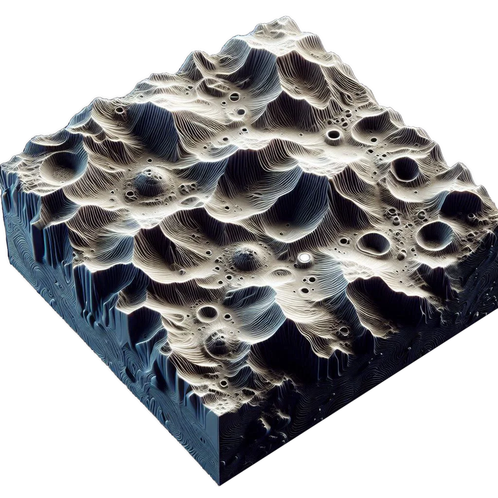

Planetary surfaces
Planetary surfaces are the solid materials of the planet that are exposed to the atmosphere or outer space. Planetary surfaces may vary vastly depending on the type of planet and distance from the central star. Surface morphology refers to the physical features, characteristics and structures present on the surface of a planet.
Importance
With the reduction in non-renewable resources, scientists are looking forward to extraterrestrial mining sites and thus, a proper understanding of the surface morphology of specific planets and satellites are of utmost importance in order to fuel future exploration missions and even manned missions, which are guaranteed to be a necessity for the future. The morphologies can also give indirect insights on the chemical composition of the concerned body.

Endogenic
Endogenic morphologies refer to surface features caused by internal planetary forces like tectonic activities.
Exogenic
Exogenic morphologies are produced by external geological processes like transportation, weathering and erosion.
Exotic
Exotic morphologies are created by the impact of celestial bodies leading to the formation of impact craters, debris planes, etc.

Surface
Morphology
Of planets and satellites
Morphology